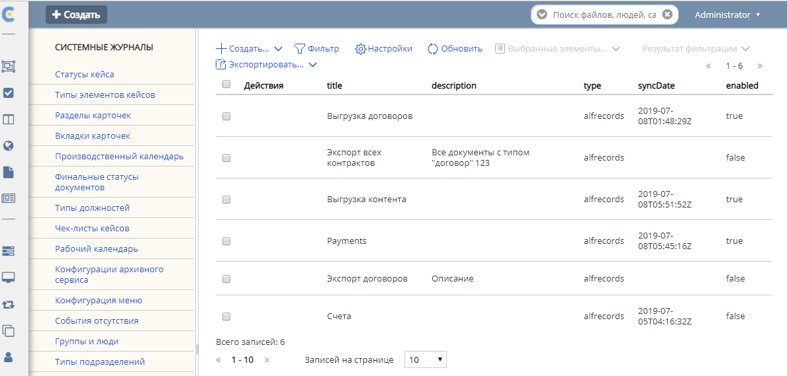
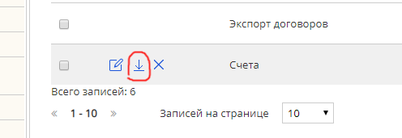

Интеграции¶
EDI¶
Основные принципы¶
Интеграция с ЭДО провайдерами, как уже писалось в других статьях на эту тему, построена на стандартном для микросервиса интеграций механизме - синхронизациях ECOS Synchronization. Это для нас означает, что у нас есть простой способ управлять состоянием интеграции с конкретным ЭДО провайдером в рамках настроенного ящика в ECOS посредством уже готового функционала (включение/выключение чекбоксами, сброс состояния при необходимости для старта интеграции с самого начала и тд).
Перейдем к описанию самого функционала с указанием классов.
ECOS синхронизации работают на механизме объявления реализации SyncExecutionFactory, которые поставляют реализации SyncExecution, в котором уже происходит шедулинг интеграции.
В нашем случае, за это ответственны классы EdiSyncExecutionFactory и EdiSyncExecution. Работу EdiSyncExecutionFactory рассматривать не будем, так как кроме регистрации в SyncService и создания EdiSyncExecution - никакой работы он и не делает.
Рассмотрим работу EdiSyncExecution:
Зашедулить джобу по настройкам.
В джобе - повесить лок с помощью ShedLock. Если смог повесить лок - работа продолжается.
Собирает данные для интеграции, ищет зарегистрированную для ЭДО-провайдера из настроек ящика реализацию интерфейса EdiEventsSyncService. Если не находит - сыпет исключения. Важно отметить, что реализаций EdiEventsSyncService в самом микросервисе integrations на самом деле нет, как они подключаются будет описано в разделе ниже.
Делегирует работу найденному EdiEventsSyncService, передавая ему собранные ранее данные + метод-колбек для обновления состояния синхронизации.
То есть, по факту, особой работы EdiSyncExecution не делает, полезная работа выполняется за счет делегирования.
Связь сервисов-реализации с EdiSyncExecution для интеграции¶
Ответ довольно прост, существует общая либа ecos-edi-commons, в которую вынесены основные интерфейсы интеграции и структуры данных. Таким образом, удается связать решение на уровне интерфейсов (то есть, связь такая, что интерфейс используется в микросервисе integrations, а реализация идет в сторонних либах).
Ок, с этим разобрались, что-то реализуется, а как микросервис то получит это, если он этих зависимостей даже не имеет? Тут ответ уже сложнее. Решение основано на загрузке кода библиотек в микросервис в виде OSGi бандлов. Для более подробного изучения этого - можно почитать статью Функционал загрузки OSGI пакетов (и рекомендованные статьи), а так же пример загрузки либы контур для этих целей - Настройка получения событий с ящиком Контур_Диадок
Рассмотрим что именно за интерфейсы и сервисы определены в ecos-edi-commons либе:
EdiEventsSyncService - интерфейс, в который делегируется вся интеграция с ЭДО-провайдером.
EdiEventsSyncServiceResolver - класс, в котором регистрируются EdiEventsSyncService по связке “ЭДО-провайдер - Сервис” при загрузке бандла, предназначенного для интеграции с каким-то ЭДО-провайдером. Содержится в микросервисе в виде бина.
EdiBoxService - интерфейс для получения информации о ящике. Расширяется в основном коде микросервиса в виде бина.
EdiApiService - интерфейс для общения с ЭДО провайдером. Содержит методы для всех операций с ЭДО (или почти все).
EdiApiServiceResolver - класс, в котором регистрируются EdiApiService по связке “ЭДО-провайдер - Сервис” при загрузке бандла, предназначенного для интеграции с каким-то ЭДО-провайдером. Содержится в микросервисе в виде бина.
EdiService - Класс, который содержит те же методы, что и в EdiApiService, за исключением того, что в каждый метод дополнительно передается параметр EdiProviderType. По сути, является композитным EdiApiService. Делегирует логику в конкретный EdiApiService, полученный по связке с EdiProviderType из EdiApiServiceResolver.
EdiGenerator + дочерние интерфейсы - интерфейсы для расширения возможностей генерации контента в ЭДО провайдерах. К примеру, может быть 2 реализации генерации печатной формы: через вызов API генерации ПФ в сервисах диадока (удаленная генерация) или генерация силами ECOS (локальная). Регистрируется в EdiGeneratorResolver.
EdiGeneratorResolver - класс для регистрации EdiGenerator реализаций по составному ключу “Эдо-провайдер+Тип-генератора+вид-генератора”, где
Эдо-провайдер - Контур или Корус, Тип генератора - Генерация печатной формы или Генерация титула покупателя, Вид генератора - Произвольная строка с символизирующая вид. Обычно, что то вроде “локальная генерация” или “генерация по API”. * EdiStateService - Сервис для отправки событий на обработку после получения и первичной обработки их в либе (будет рассмотрено ниже).
Примерное взаимодействие сервисов можно изучить подробнее на drawIO диаграмме:
Что происходит в либах обработки и что за зверь - EdiStateService¶
Либы не обрабатывают события. Они их получают исходя последнего обработанного события (хранящегося в состоянии синхронизации), составляют универсальную структуру Event, хранящуюся в либе ecos-edi-commons и после этого отправляет эту структуру в EdiStateService.
Структуры в ecos-edi-commons можно посмотреть в следующей диаграмме drawIO :
EdiStateService - это класс в ecos-edi-commons, который отправляет события по определенному endpoint внутри camel контекста. CamelContext отправителя и CamelContext получателя события - это, как правило, разные контексты. Подобная передача осуществляется использованием эндпоинта direct-vm типа, а не простого direct.
Таким образом, происходит следующее взаимодействие:

, где указано по шагам:
1 - Отправляется запрос выполнить интеграцию через Контур (или иной другой вариант ЭДО-провайдера), для какого-то ящика, от такого то события (вызов EdiEventsSyncService).
2 - В случае найденных событий - трансформирует их в структуру Event и через EdiStateService отправляет сообщение в Camel из контекста Camel микросервиса интеграций.
3 - Camel контекст микросервиса интеграций отправляет сообщение с Event в CamelContext внутри VM, в котором зарегистрирован указанный эндпоинт. На скриншоте указано, что мы используем еще какой-то customer-lib со своим camel контекстом, но такая кастомизация нужна не всегда, в общем случае - будет использоваться сразу переход в ecos-lib.
4 - После выполнения каких-то работа в customer-lib роутах - они отправляют сообщение в CamelContext либы ecos-lib. Там происходит обновление документов, подписей и тд в альфреско путем вызовов Records API.
Стоит уточнить еще раз, customer-lib и ecos-lib - отдельные OSGi бандлы, включенные в микросервис после его старта, которые создают и стартуют Camel контекст, на роутах которого возложена связь между ними. Обязательно нужно соблюдать контракт по именованию endpoint.
Структура Event¶
Не совсем так. Нет, я не имею ввиду, что Event - это какая-то хитрая структура. Это обычный POJO, с сеттерами, геттерами, equals и тд. Однако, заполнение Event носит определенный характер. Внутри него ДОЛЖНЫ содержаться все документы, состояния которых изменены в рамках данного события. Это означает, что если обрабатываем событие “Документ подписан”, то это означает, что должна прийти не просто подпись, а еще и информация о документе с АКТУАЛЬНЫМ статусом. Другая ситуация, если по документу типа УПД пришла корректировка УКД - это означает, что в рамках этого события придет не только УКД, но и информация о текущем новом состоянии УПД (только статус). Неизменившиеся поля, вроде контента или основанных на контенте формализованных атрибутах, которые могут быть тяжелыми при транспортировании - опускаются.
<<<<<<< HEAD .. _ecos-Records:
ECOS Records¶
ECOS Records - библиотека, которая располагается в репозитории ecos-records и обеспечивает универсальный API для доступа к записям из произвольных источников (БД, alfresco, REST и др.)
Заметка: Для работы в IntelliJ IDEA требуется установить в IDEA плагин Lombok.
Важный момент: ECOS Records API - это НЕ GraphQL в чистом виде. Часть запроса парсится GraphQL, но далеко не весь. В примере ниже показаны GraphQL части:

Такой запрос аттрибутов преобразуется примерно в следующий вид:
{
meta {
a: att(n: "icase:caseStatusAssoc") {
disp
}
b: att(n: "icase:caseStatusAssoc") {
disp
}
c: att(n: "icase:caseStatusAssoc") {
disp
}
d: att(n: "cm:title") {
disp
}
e: att(n: "cm:title") {
disp
}
f: att(n: "cm:title") {
disp
}
g: att(n: "contracts:contractor") {
disp
}
h: att(n: "contracts:contractor") {
disp
}
i: att(n: "contracts:contractor") {
disp
}
j: edge(n: "contracts:contractWith") {
options {
value: str
label: disp
}
}
k: edge(n: "contracts:contractWith") {
options {
label: disp
value: str
}
}
l: edge(n: "cm:name") {
multiple
}
m: edge(n: "cm:name") {
multiple
}
}
}
В целях экономии трафика и всвязи со строгими ограничениями на возможные имена возвращаемых полей в запросе подставляются кодовые имена a,b,c,d и тд. После получения данных имена обратно преобразуются в «contractor0», «title0» и т.д
Представленный GraphQL запрос является деталью реализации и может потерять свою актуальность ввиду внутренних изменений (вплоть до замены GraphQL на собственный формат).
RecordsService¶
Сервис для работы с абстрактными записями, источником которых может быть любой DAO.
Существует четыре операции, которые можно проделывать над записями:
а) Поиск записей
Методы: queryRecords
Для поиска записей всегда передается RecordsQuery, который содержит параметры поиска (аналогично SearchParameters из Alfresco). Помимо самого простого метода для поиска с одним параметром RecordsQuery так же есть варианты с объединенным поиском и запросом метаданных. О вариантах запроса метаданных см. ниже.
б) Получение метаданных записи (в данном контексте метаданные - любые данные о записи. Например - имя договора, статус или даже контент)
Методы: getAttributes, getAttribute, getMeta
Существует три уровня абстрации для получения метаданных:
DTO Class > Attributes > Schema
DTO Class - класс, который используется для генерации списка аттрибутов для формирования схемы и запроса метаданных из DAO.
После получения всех данных из DAO идет создание инстансов переданного DTO класса и наполнение его данными с помощью библиотеки jackson; Список аттрибутов формируется либо из названий полей, либо можно добавить аннотацию MetaAtt для указания аттрибута вручную.
Attributes - аттрибуты записи. Существует две нотации: упрощенная (перед запросом преобразуется в полную) и полная (дает полный контроль над загружаемыми данными). Сервер отличает вид нотации по первому символу в аттрибуте. Для полной нотации - это «.»
Упрощенная нотация:
Просто аттрибут - „cm:title“ преобразуется в „.att(n:»cm:title»){disp}“ Аттрибут с типом - „cm:title?json“ преобразуется в „.att(n:»cm:title»){json}“ Метаданные аттрибута - „#cm:title?protected“ преобразуется в „.edge(n:»cm:title»){protected}“ Варианты выбора - „#cm:title?options“ преобразуется в „.edge(n:»cm:title»){options{label:disp,value:str}}“
Запрос вложенных полей - „icase:caseStatusAssoc{ .disp, .str, title: cm:title, name: cm:name, uuid: sys:node-uuid}“
преобразуется в „.att(n:»icase:caseStatusAssoc»){_disp:disp,_str:str,title:att(n:»cm:title»){disp},name:att(n:»cm:name»){disp},uuid:att(n:»sys:node-uuid»){disp}}“
Полная нотация:
Существует две основных сущности, с которыми идет работа в полной нотации: MetaValue и MetaEdge (интерфейсы из ecos-records).
Запись представлена в виде MetaValue, у которого можно запросить: * Вложенные аттрибуты (тоже MetaValue) через „att(n:»Имя_аттрибута»){…}“ * Метаданные аттрибута (MetaEdge) через „edge(n:»Имя_аттрибута»){…}“ * Скаляр (финальное значение MetaValue, у которого уже нельзя получать вложенные поля) - str, disp, bool и др.
Для получения массива значений следует использовать окончание „s“: atts(n:»cm:title»){str} или edge(n:»cm:title»){vals{str}}
Запрос аттрибутов может иметь неограниченную вложенность. Например для получения имени статуса кейса можно запросить следующий аттрибут: „.att(n:»icase:caseStatusAssoc»){att(n:»cm:title»){str}}“
ВАЖНО: Значения аттрибутов перед тем как вернуться проходят процесс упрощения - все json объекты с одним ключом будут развернуты. Например:
Запрос: „.att(n:»icase:caseStatusAssoc»){att(n:»cm:title»){str}}“ DAO по правилам GraphQL вернет следующий ответ: {«att»:{«att»:{«str»:»Новый»}}} Но сервис убирает лишнюю вложенность и мы получаем просто «Новый»
Запрос: „.att(n:»icase:caseStatusAssoc»){att(n:»cm:title»){str, id}}“ GraphQL: {«att»:{«att»:{«str»:»Новый», «id»:»workspace://SpacesStore/satus-new»}}} Упрощение: {«str»:»Новый», «id»:»workspace://SpacesStore/satus-new»}
В аттрибуте мы можем так же указывать псевдоним для возвращаемого значения. Например: Запрос: „.att(n:»icase:caseStatusAssoc»){att(n:»cm:title»){statusName: str, statusId: id}}“ Вернет: {«statusName»:»Новый», «statusId»:»workspace://SpacesStore/satus-new»}
Для получения аттрибутов есть методы с аргументом Map и Collection. Если передан Map, то ключи - это псевдонимы для возвращаемых значений. Они могут быть любыми и сервис их никак особым образом не обрабатывает. Значения - запрашиваемые аттрибуты. Если передана Collection, то это аналогично поведению с Map где каждый ключ равен связанному значению.
Schema - самый низкоуровневый способ описания метаданных, которые мы хотим получить. Здесь мы передаем GraphQL схему и получаем ответ полностью в том виде, в котором мы его запросили. Данный метод предназначен скорее для системных нужд (например - удаленный вызов getMeta со схемой).
в) Мутация (изменение или создание) записи;
Каждый DAO решает сам создавать или редактировать полученную запись. Например: запись где id == «» можно воспринимать как новую и создать её с полученными свойствами. AlfDictionaryRecords считает каждую запись новой и делегирует создание в AlfNodesRecordsDAO.
г) Удаление записи;
RecordRef¶
RecordRef - это идентификатор записи, который состоит из трех частей:
а) appname - идентификатор приложения, к которому относится запись. б) sourceId - идентификатор источника данных, к которому относится запись; в) id - локальный идентификатор, который должен быть уникален в пределах источника;
Общий вид: «appname/sourceId@id». / и @ - особые разделители. Экранирование пока не поддерживается, но в перспективе «@» и «/» не будут считаться спец символами.
В id может быть закодирован вложенный источник. Например, если мы используем RemoteRecordsDAO и хотим работать с определенным источником на удаленном приложении мы можем составить RecordRef следующим образом: remote-dao-id@dao-on-remote@local-id. В таком случае при попадании RecordRef в RemoteRecordsDAO первый идентификатор источника вырезается и на удаленный сервер отправляется запрос с RecordRef dao-on-remote@local-id
Если в RecordRef не задан sourceId, то источником по-умолчанию считается - «» (пустая строка). В Alfresco с таким идентификатором зарегистрирован AlfNodesRecordsDAO - источник данных, у которого запись === нода Alfresco. Из этого следует, что NodeRef.toString() === RecordRef.toString() для нод Alfresco;
«@@localId» === «@localId» === «localId» И «source@@» === «source@»
GraphQL схема¶
type MetaValue {
id: ID
att(n: String): MetaValue
atts(n: String): [MetaValue]
bool: Boolean
disp: String
edge(n: String): MetaEdge
has(n: String): Boolean
json: JsonNode
num: Float
str: String
}
type MetaEdge {
description: String
distinct: [MetaValue]
editorKey: String
javaClass: String
multiple: Boolean
name: String
options: [MetaValue]
protected: Boolean
title: String
type: String
val: MetaValue
vals: [MetaValue]
}
type Query {
meta: [MetaValue]
}

Использование в браузере¶
Для работы с RecordsService’ом создан компонент Citeck.Records. Пример использования:
Citeck.Records.get("workspace://SpacesStore/16d8668d-7325-49ef-80d3-f2bfdb4c6d00").load({
'status': '.att(n:"icase:caseStatusAssoc"){att(n:"cm:title"){str}}',
'display': '.disp'
}).then(res => console.log(res));
Citeck.Records.get('ecos-config@ecos-forms-enable').loadAttribute('.str').then(res => console.log(res))
Использование в журналах¶
Для использования RecordsDAO (records source) в журналах надо его описать и зарегистрировать в сервисе (recordsService.register(…)). После указанных действий мы можем прописать в конфиге журнала параметр datasource, в котором указать Id нового RecordsDAO. Пример:
<bean id="testRecordsConn" class="ru.citeck.ecos.remote.RestConnection">
<property name="password" value="admin" />
<property name="username" value="admin" />
<property name="host" value="http://localhost:8081" />
<property name="enabled" value="true" />
</bean>
<bean id="taxDocsSourceId81" class="ru.citeck.ecos.records.source.RemoteRecordsDAO">
<property name="id" value="taxDocsRemote" />
<property name="enabled" value="true" />
<property name="restConnection" ref="testRecordsConn" />
<property name="remoteSourceId" value="tax-docs" />
</bean>
<util:list id="tax-documents-sources">
<ref bean="taxDocsRecordsSource" />
<ref bean="taxDocsSourceId81" />
</util:list>
<bean id="ecos.tax-reporting.tax-docs-records-source" class="ru.citeck.ecos.services.tax.records.TaxDocsRecordsProxy">
<property name="id" value="tax-docs-proxy" />
<property name="target">
<bean class="ru.citeck.ecos.records.source.MultiRecordsDAO">
<property name="recordsDao" ref="tax-documents-sources" />
</bean>
</property>
</bean>
Схематично доступ к данным в журналах на момент написания статьи выглядит следующим образом:

Выполнение групповых действий¶
Выполнение группового действия делегируется RecordsDAO, к которому относится запись (определяется по sourceId). Имплементация может отправлять удаленные запросы или выполнять действия локально. Для работы с данными, которые приходят и локально и удаленно можно использовать RecordsActionFactory. Для примера можно посмотреть AddDocumentToTaxPackageAction, DeleteTaxDocumentAction, ExportTaxDocuments, ExportTaxInventory в ecos-enterprise
Известные проблемы:
Если RecordsDAO возвращает записи с Server ID отличным от пустой строки, то в журналах не будут отображаться действия для этих записей. Решение: Использовать actionFormatter для описания экшенов. Ссылка: Конфигурация журналов Раздел: Переопределение действий для записей (actionFormatter). ======= >>>>>>> 94a11f9afd8f43ef4bbac19de108ea68b58a8a86 Currency rates ————–
Message queue¶
ECOS Synchronization¶
В микросервисе ecos-integrations добавлена поддержка выгрузки нод альфреско в таблицу базы данных. На данный момент выгрузка осуществляется в таблицы БД микросервиса ecos-integrations.
Команда для подключения к БД на стенде с контейнерами докера:
/usr/bin/psql postgres://integrations@localhost:15432/integrations
Параметры для подключения к alfresco по REST:
ecos-integrations:
alfresco:
url: http://ecos:8080
authentication:
username: integrations
password: 97qiow104UIG
Можно менять эти настройки на стендах или оставить как есть (будет работать только если ECOS развернут в той же докер сети под именем «ecos»).
На стороне alfresco для микросервиса должна быть заведена учетная запись integrations с паролем 97qiow104UIG (значения по-умолчанию) и админскими правами.
Скрипт для создания пользователя:
var userName = "integrations";
people.createPerson(userName, userName, userName, userName + "@ecos.ru", "97qiow104UIG", true);
var adminsGroup = groups.getGroup("ALFRESCO_ADMINISTRATORS");
adminsGroup.addAuthority(userName);
Чтобы настроить выгрузку нод необходимо на стенде с ecos-enterprise-repo модулем открыть системные журналы в alfresco и найти там журнал Синхронизация (Synchronization):
{kind=link}
title - заголовок синхронизации
description - описание синхронизации
type - тип синхронизации (пока доступен только 1 тип - alfrescords (выгрузка нод альфреско))
enabled - включена или нет синхронизация
В журнале можно создать новую выгрузку двумя способами:
Создание с помощью полей формы (удобно для создания «с нуля»)
Создание с вводом json (удобно для переноса конфигурации между серверами)

Создание с помощью формы выглядит следующим образом:

Title - Заголовок выгрузки. Нужен для отображения в журнале синхронизации
Description - Описание выгрузки. Следует заполнить это поле чтобы другие люди могли сразу понять предназначение выгрузки.
Enabled - Включить/выключить синхронизацию;
Reset state - Сбросить состояние (выгрузка начнется с самого начала)
Config - Раздел с конфигурацией выгрузки
- Filter type - Тип фильтра, по которому будут выбираться ноды для выгрузки. На момент написания статьи доступно два типа:
ECOS Type/Kind - фильтрация происходит по выбраному типу и виду
Raw Predicate - фильтрация происходит по заданному предикату в формате JSON. Синтаксис предикатов можно посмотреть здесь Select Journal
Target table - Имя таблицы для выгрузки. В базе данных к этому имени прибавится префикс ecos_sync_ чтобы исключить случайные изменения системных таблиц.
Attributes - Выгружаемые аттрибуты. Слева описываются названия колонок в результирующей таблице, а справа выгружаемые аттрибуты. Синтаксис аттрибутов в правой колонке используется из Records API. Т.о. можно выгружать вложенные аттрибуты. Например для выгрузки статуса договора можно описать следующие аттрибуты:
{«status_id»: «icase:caseStatusAssoc?id», //нодреф статуса «status_ru»: «icase:caseStatusAssoc.cm:title.ru», //заголовок статуса на русском «status_en»: «icase:caseStatusAssoc.cm:title.en» //заголовок статуса на английском
}
Если у аттрибута опустить тип скаляра (после знака ?), то по-умолчанию все аттрибуты будут выгружаться в строковом виде. Если требуется числовой вид, то следует добавить к аттрибуту ?num, а для булева поля ?bool
Для полей с датой на данный момент есть возможность их выгрузить в виде строки с форматом ISO8601 (это происходит автоматически и дополнительной настройки для этого не нужно).
Подробнее о синтаксисе аттрибутов можно почитать в соответствующей статье: ECOS Records
Изменение синхронизации «на лету»¶
Настройку синхронизации можно менять без перезагрузки сервера. При этом есть несколько особенностей:
Новые аттрибуты будут появляться только для заявок, которые изменились с момента изменения конфигурации. Для того чтобы новые аттрибуты появились у всех записей можно воспользоваться двумя способами:
Первый - сбрасываем состояние синхронизации и недостающие данные синхронизируются полностью.
Второй - создаем новую конфигурацию с недостающими атрибутами(которые были добавлены в исходную конфигурацию) и устанавливаем в ней ту же таблицу что и в исходной конфигурации. Когда новая конфигурации догонит старую, новую можно будет удалить.
При удалении аттрибутов таблица не чистится. То что уже синзронизировано остается в таблице.
Изменение типа колонки на данный момент не поддерживается. Т.о. следует создать новый аттрибут если есть такая необходимость, а старый удалить из конфигурации. Для миграции старых записей можно воспользоваться рекоментациями из п.1
Перенос конфигурации между стендами¶
{kind=link}
Затем нужно:
Скопировать содержимое этого файла
перейти на целевой стенд
открыть журнал синхронизации
Нажать Создать → Import JSON
В появившемся окне вставить json, который мы скопировали в п.1
Сохранить форму
Обновить содержимое журнала

Структура таблицы с данными¶
id (SERIAL PRIMARY KEY) - идентификатор строки, _modified (TIMESTAMPTZ) - дата последнего изменения строки, _created (TIMESTAMPTZ) - дата создания строки, _version (BIGINT) - внутренняя версия записи. Используется, чтобы избежать одновременного изменения из раных потоков или инстансов микросервиса. modified (VARCHAR) - дата изменения, записи в alfresco в ISO8601, record_ref (VARCHAR) - alfresco@ + nodeRef заявки в alfresco
все поля, которые описаны в интерфейсе
Пример скрипта для просмотра существующих записей в alfresco, для просмотра данных которые пойдут в таблицу интеграции¶
Часть с атрибутами можно взять из json конфигурации интеграции, поле «attributes»:
Citeck.Records.query({
query: 'tk:type:"workspace://SpacesStore/type-unilever-te-request"',
language: 'fts-alfresco',
consistency: 'EVENTUAL',
page: {
maxItems: 100
}
}, {
"Reg Number": "uterm:terRegNumber",
"Expense Type": "uterm:terExpenseType.utedm:teetName",
"RP": "uterm:reportablePerson",
"RP Cost Center ": "uterm:terRPCostCenter",
"OS GRC Code": "uterm:terOrdSignCRGCode.cm:title",
"RP Vendor Code": "uterm:terRPVendorCode",
"RP ID": "uterm:terRPPersonnelNumber",
"RP Sub Function": "uterm:terRPSubFunction.udm:subFunctionName",
"AR Approve Date": "uterm:terAdvRepApproveDate",
"OS Date": "uterm:terOrdSignDate",
"Status": "icase:caseStatusAssoc.cm:title",
"Line Manager": "uterm:terLineManager",
"Accountant": "uterm:terAccountant",
"OS Goal Travel": "uterm:terOrdSignGoalTravelType.cm:title",
"OS Outsider Goal Travel": "uterm:terOrdSignOutsiderGoalTravelType.cm:title",
"OS Travel Begin Date": "uterm:terOrdSignTravelBeginDate",
"OS Travel End Date": "uterm:terOrdSignTravelEndDate",
"OS Destination City": "uterm:terOrdSignDestinationCity",
"OS Diff Destination Point": "uterm:terOrdSignDiffDestinationPoint",
"OS Hotel Required": "uterm:terOrdSignHotelRequired.cm:title",
"OS Ticket Required": "uterm:terOrdSignTicketRequired",
"OS Tickets": "uterm:terOrdSignTicketsTable.uterm:tertTransportType",
"AR Doc Requester Amount": "uterm:terAdvRepDocRequesterAmount",
"AR Currency": "uterm:terAdvRepCurrency.idocs:currencyName"
}).then(console.log);
«Reg Number» - key (Attributes), «uterm:terRegNumber» - value (Attributes)
Восстановление потеряных записей¶
Версия микросервиса: 1.14.0-snapshot
На форму добавлен флаг “Run recovery job”. Если он активен, то вместе с основной выгрузкой дополнительно запускается джоба, которая ищет пропущенные записи за последний час. Если такие записи находятся, то происходит запуск восстановления. В процессе восстановления сужается диапазон дат, между которыми найдено отличие. После уменьшения диапазона происходит пересинхронизация найденых в нем записией.
Важно
значение флага проверяется только при запуске выгрузки (флаг Enabled переключается с False на True) или при перезагрузке микросервиса.
Дата модификации записи сохраняется в поле _rec_modified. Возможно потребуется создание индексов для этого поля, чтобы джоба работала эффективнее (Но все же если поиск будет долгим, то ничего страшного не произойдет. Просто восстановление будет происходить не так быстро).